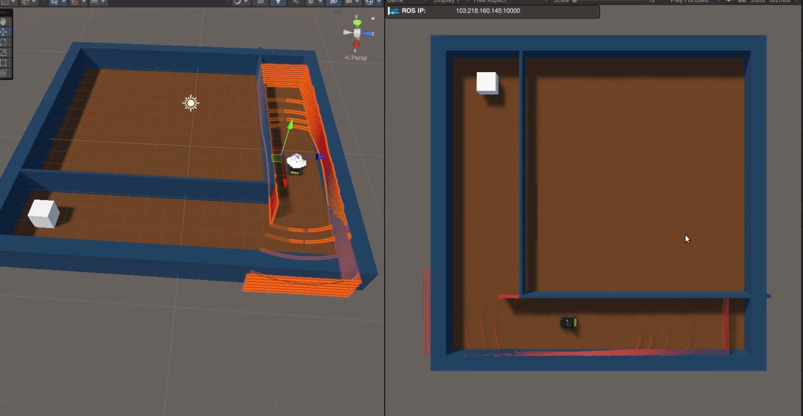

현상을 수치로 바꿉니다.
감각적인 '떨림'이나 '느림'을 표준편차, 변동 범위, 처리 시간 분포로 정의합니다. 개선 전후를 같은 데이터로 비교할 수 없다면 개선이 아니라고 생각합니다.
Isaac Sim 기반 디지털 트윈부터 ROS 2 센서 파이프라인, 카메라·LiDAR 인지 알고리즘까지. 석사 과정에서는 강화학습 정책을 실제 로봇에 전이하는 Sim-to-Real 연구로 SCIE 저널 1저자 논문(Sensors, 2025)을 게재했고, 현재는 자율주행 주차 로봇 기업에서 인지 알고리즘과 시뮬레이션 검증 환경을 개발하고 있습니다. 실제 환경에서 발견한 문제를 재현하고 수치로 개선하는 것이 저의 방식입니다.
산업 현장의 실무 프로젝트와 석사 과정의 연구 프로젝트를 함께 정리했습니다. 실무 프로젝트는 보안을 위해 회사·제품 정보를 제외하고 문제 해결 과정과 기술적 판단 중심으로 서술했습니다. 각 카드를 누르면 이미지·영상이 포함된 상세 페이지로 이동합니다.
동작하지 않던 필터링의 구조적 결함을 찾아 Ceres 비선형 최적화와 쿼터니언 필터링으로 재설계하고, 장축 차량 원거리 미검출을 해결하며 늘어난 연산 비용을 Kalman 기반 Dynamic ROI로 되돌렸습니다.
pitch 노이즈 59% 감소 · 주행 중 검출 약 17배 · 처리 시간 50% 단축
상세 보기 → INDUSTRY
INDUSTRY실제 로봇·센서·운용 환경을 시뮬레이션에 재구성하고, ROS 2 인지 알고리즘을 반복 검증할 수 있는 디지털 트윈 환경을 단독으로 구축하고 있습니다.
현장 방문 없이 실패 상황 재현 · Docker 알고리즘 연동 완료
상세 보기 →멀티카메라 GigE 스트리밍 병목 분석 · 2026.03 — 2026.04 — 카메라 4대 동시 스트리밍의 프레임 유실 원인을 4차례 실험과 지연 측정으로 계층별(스위치 → PoE 공유 대역폭 → 업링크) 규명하고, 안정 동작 스트림 조건과 권장 네트워크 구성을 도출했습니다.
 RESEARCH
RESEARCH3D LiDAR-카메라 융합으로 사람을 인식하고, 개방 공간(Open-space)을 고려한 강화학습으로 협소 공간에서 사람과 공존하는 주행 정책을 학습했습니다.
성공률 평균 94% · 기존 crowd navigation 대비 주행 시간 35% 단축 · Sensors 게재
상세 보기 →
RESEARCHUnity에서 학습한 강화학습 주행 정책을 ONNX로 변환해 실제 로봇(Husky A200)에 전이하고, 노이즈 주입과 Curriculum Learning으로 실환경 주행을 안정화했습니다.
약 50m 직선 복도 안정 주행 — 1차 실험 대비 주행 거리 6.7배
상세 보기 → RESEARCH
RESEARCH3D 스캔한 실제 연구소 환경을 Isaac Sim으로 재구성하고, LiDAR 6종·IMU·로봇 제어의 ROS 연동 인터페이스를 개발했습니다. 전체 일정과 모듈 통합을 리딩했습니다.
ETRI 연구과제 · LiDAR 6종 ROS 연동 · 시연 영상 공개
상세 보기 → RESEARCH
RESEARCH산업 현장을 디지털 트윈으로 재현해 알고리즘을 사전 검증하고, AprilTag 기반 위치 추정과 매니퓰레이터 제어로 표면 조도 검사를 자동화했습니다.
반복 정밀도 평균 오차 1cm · 데이터 수집 속도 50% 향상 · 조도 추정 정확도 10% 개선
상세 보기 →실외 환경 모바일 로봇 자율주행 실험·분석 — GPS·IMU·Camera·LiDAR 데이터 수집과 2D LiDAR 기반 동적 장애물 회피 주행, GPS 궤적 시각화.
OmniIsaacGym 기반 장애물 회피 경로 계획 · BARN Challenge 준비 · Docker 환경 Jackal Navigation 설계 — 그 외 연구 기록은 Notion 아카이브 ↗에 정리되어 있습니다.
감각적인 '떨림'이나 '느림'을 표준편차, 변동 범위, 처리 시간 분포로 정의합니다. 개선 전후를 같은 데이터로 비교할 수 없다면 개선이 아니라고 생각합니다.
가림, 원거리, 저조도, 연산 부하 같은 실패 상황을 실제 데이터와 시뮬레이션 양쪽에서 반복 가능한 시험으로 만듭니다.
검출 성능만 올리지 않고 ROI, 실행 조건, 센서 구성까지 시스템 전체 비용을 함께 최적화합니다.
석사 과정(2024.03 – 2026.02) 동안 SCIE 저널 2편(1저자 1편)과 국내 학술대회 8편, 국제 학술대회 1편을 발표했습니다.